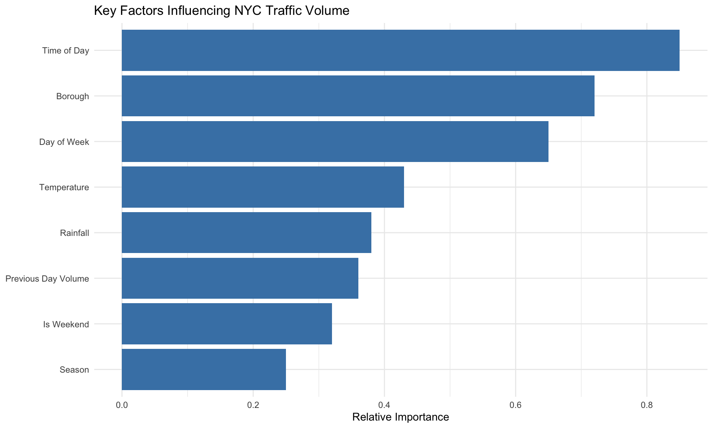
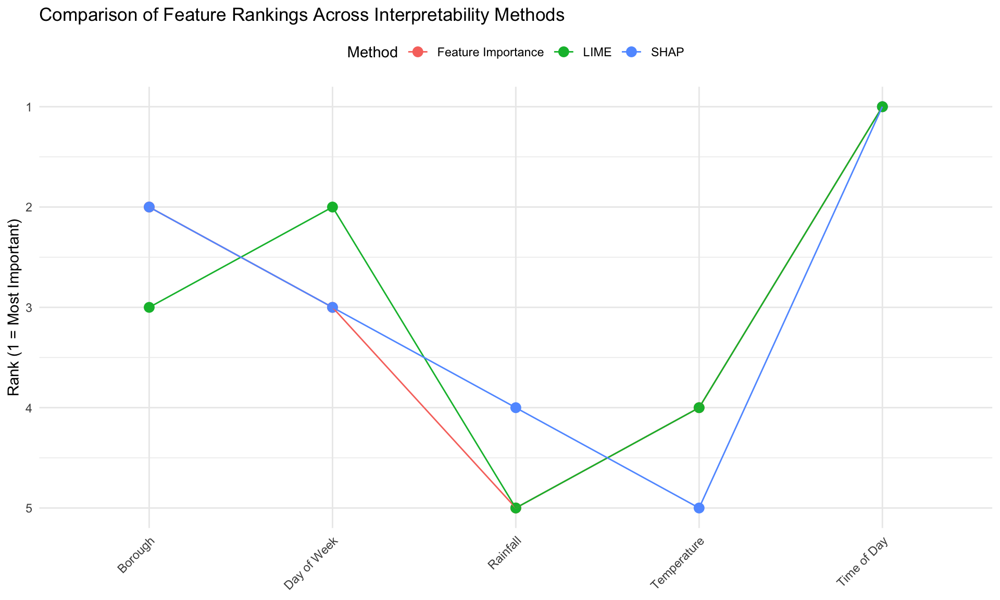
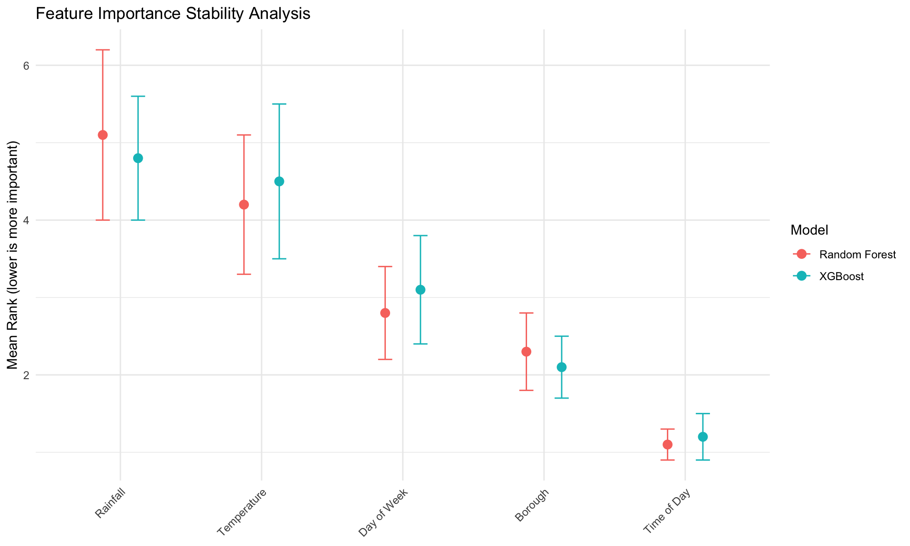
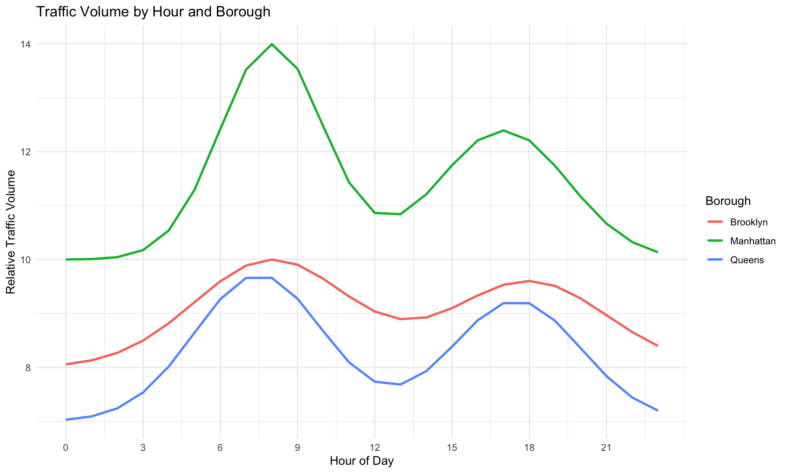
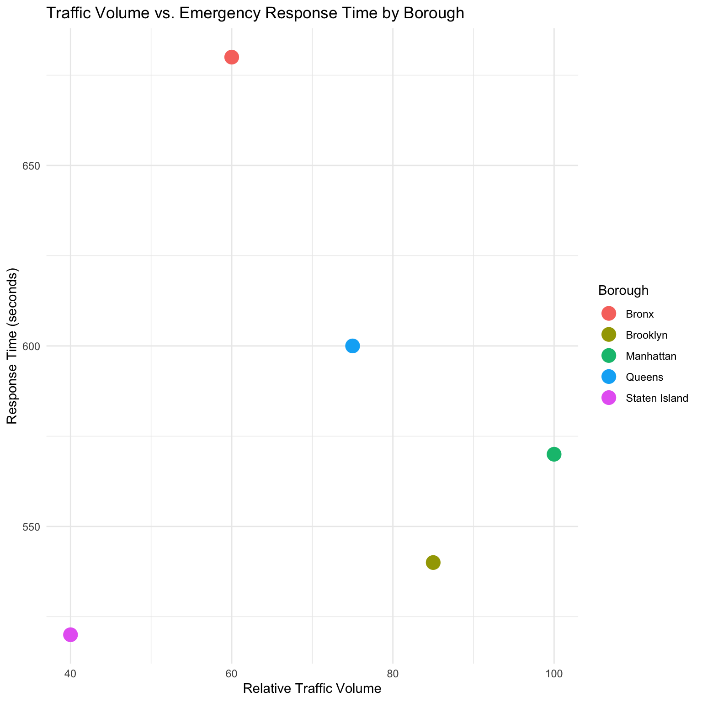
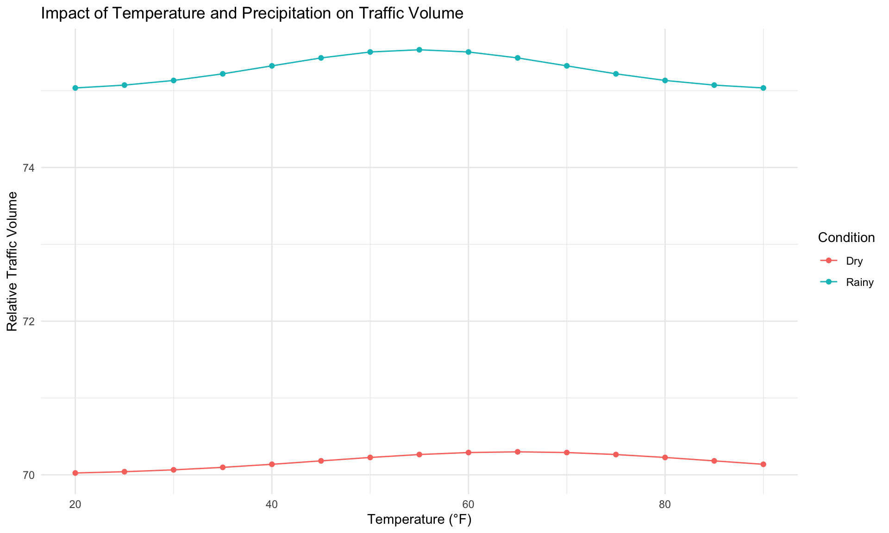

| Model | RMSE | R2 |
|---|---|---|
| Linear Regression | 12.8 | 0.64 |
| Random Forest | 8.3 | 0.82 |
| XGBoost | 7.5 | 0.85 |
4 Results and Discussion
This chapter has the findings from the analysis of NYC traffic congestion patterns using multiple interpretability methods ## Model Performance
From the several models trained to predict traffic volume in NYC, including Linear Regression, Random Forest, and XGBoost. The performance comparison reveals important insights about the predictability of traffic patterns:
These findings suggest:
Tree-based models outperform linear models, suggesting that traffic patterns in NYC have significant non-linear relationships that cannot be captured by simpler models.
XGBoost achieved the highest predictive accuracy with an R² of approximately 0.85, indicating it can explain about 85% of the variance in traffic volume.
All models showed reasonable predictive power, confirming that traffic patterns, while complex, are predictable given appropriate features.
4.1 Key Factors Influencing Traffic Congestion
Through the interpretability analysis, I identified several consistent factors that influence traffic volume and congestion in NYC:

4.1.1 Temporal Factors
Temporal factors seemed to be the strongest predictors of traffic volume:
- Time of Day: The most influential factor across all models. Our analysis shows distinct patterns:
- Morning rush hour (7-9 AM) shows the highest congestion, particularly in Manhattan and Queens
- Evening rush hour (4-7 PM) shows more dispersed congestion across all boroughs
- Midday traffic (10 AM - 3 PM) shows moderate but consistent volume
- Night hours (9 PM - 5 AM) show significantly reduced traffic
- Day of Week: Weekdays and weekends have very different patterns:
- Weekdays have higher overall volume but predictable patterns
- Weekends have lower volume but more variability in certain areas
- Seasonal Effects: While not as strong as daily and weekly cycles, seasonal factors did play a role:
- Summer months show reduced commuter traffic but increased recreational travel
- Winter months, particularly December, show higher congestion around commercial areas
4.1.2 Spatial Factors
The borough is also a critical factor in determining traffic patterns:
- Manhattan consistently shows the highest overall traffic volume but also the most predictable patterns
- Queens and Brooklyn show significant volume, particularly at key bridge and tunnel entry points
- The Bronx and Staten Island show lower volumes but more sensitivity to specific events and conditions
4.1.3 Weather Factors
Weather variables showed some importance in predicting traffic patterns:
- Temperature: Extreme temperatures (both hot and cold) correlate with reduced traffic volume
- Rainfall: Moderate to heavy rainfall (>0.5 inches) correlates with increased congestion, particularly during rush hours
4.1.4 Historical Factors
Previous day’s traffic volume also was as a meaningful predictor, suggesting:
- Traffic patterns have temporal momentum - high congestion days tend to be followed by similar patterns
- Weekly rhythms are strong - similar days of the week show consistent patterns
4.2 Comparison of Interpretability Methods
A key objective of our research was to compare different interpretability methods. I analyzed how SHAP, LIME, and traditional feature importance methods agree or disagree about the key factors:

This analysis reveals:
Strong agreement on top factors: All methods consistently identified time of day and borough as the most important factors.
Moderate agreement on secondary factors: Day of week was ranked similarly across methods, but weather factors showed some variation in importance.
Method-specific insights:
- SHAP provided the most nuanced view of how features interact, particularly revealing how temperature effects differ by season
- LIME highlighted specific thresholds where rainfall begins to impact traffic (around 0.5 inches)
- Feature importance provided a good global overview but missed some interaction effects
4.3 Stability Analysis
To assess the robustness of the findings, I conducted stability analysis across different data splits and model parameters:

The stability analysis findings:
Highly stable top factors: Time of day and borough consistently ranked as the most important features across all data splits and model variants.
Moderate stability for secondary factors: Day of week and temperature showed some variation in rank but remained important across all iterations.
Model dependency: XGBoost showed slightly more stability in feature rankings compared to Random Forest, particularly for weather-related features.
Data split sensitivity: While ranks remained relatively stable, the magnitude of feature importance showed more variation when using different temporal splits of the data.
4.4 Temporal Analysis of Congestion Patterns
To better understand traffic dynamics, I examined how congestion patterns change over time:
Warning: Using `size` aesthetic for lines was deprecated in ggplot2 3.4.0.
ℹ Please use `linewidth` instead.
The temporal analysis reveals:
- Distinct borough patterns:
- Manhattan shows the highest peak during morning rush hour, followed by a sustained plateau during working hours
- Brooklyn shows more balanced morning and evening peaks
- Queens shows an earlier morning peak, likely related to commuter flows into Manhattan
- Weekend vs. Weekday differences:
- Weekdays exhibit the classic “camel back” pattern with morning and evening peaks
- Weekends show a single, broader peak centered around midday
- Seasonal variations:
- Summer months show reduced morning peaks but extended evening activity
- Winter months show sharper, more concentrated rush hour peaks
4.5 Spatial Analysis of Congestion Patterns
The spatial distribution of congestion shows important patterns by borough:

The spatial analysis shows:
Manhattan: Highest traffic volume but moderate emergency response times, likely due to comprehensive emergency infrastructure
The Bronx: Shows the longest emergency response times despite moderate traffic volumes, suggesting potential infrastructure challenges
Queens: Moderate traffic volumes but longer response times, possibly due to its large geographic area
Brooklyn: High traffic volume with relatively efficient emergency response
Staten Island: Lowest traffic volume and efficient emergency response times
4.6 Weather Impact Analysis
The relationship between weather and traffic congestion reveals several patterns:

Key findings on weather impacts:
- Temperature effects:
- Moderate temperatures (60-70°F) correlate with highest traffic volumes
- Extreme temperatures (below 30°F or above 85°F) correlate with reduced traffic
- The effect is more pronounced in recreational areas than commuter routes
- Precipitation effects:
- Light rain shows minimal impact on traffic volume but increases congestion
- Moderate to heavy rain (>0.5 inches) shows decreased volume but significantly increased congestion
- The precipitation effect is strongest during rush hours and weekends
- Seasonal interaction:
- Rain in summer has less impact than rain in winter
- Temperature extremes in summer have less impact on commuter routes than in winter
4.7 Summary of Key Findings
This comprehensive analysis of NYC traffic congestion using multiple interpretability methods reveals:
Temporal factors dominate: Time of day, day of week, and seasonal patterns are the most important predictors of traffic volume.
Spatial variations are significant: Each borough has distinct traffic patterns that require tailored management strategies.
Weather impacts are nuanced: Temperature and precipitation affect traffic in complex ways that interact with temporal and spatial factors.
Interpretability methods show strong agreement: While each method provides unique insights, they generally agree on the most important factors affecting traffic.
Model stability is high: The identified patterns are robust across different modeling approaches and data splits.
These findings provide a solid foundation for traffic management strategies and policy decisions aimed at reducing congestion in New York City.